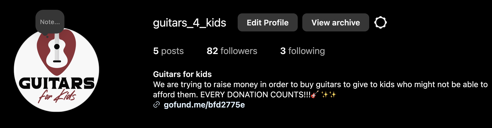
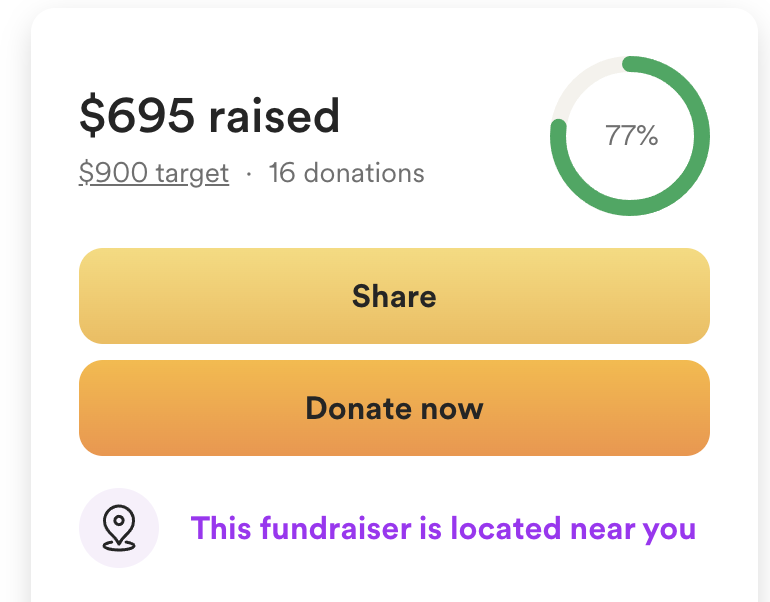
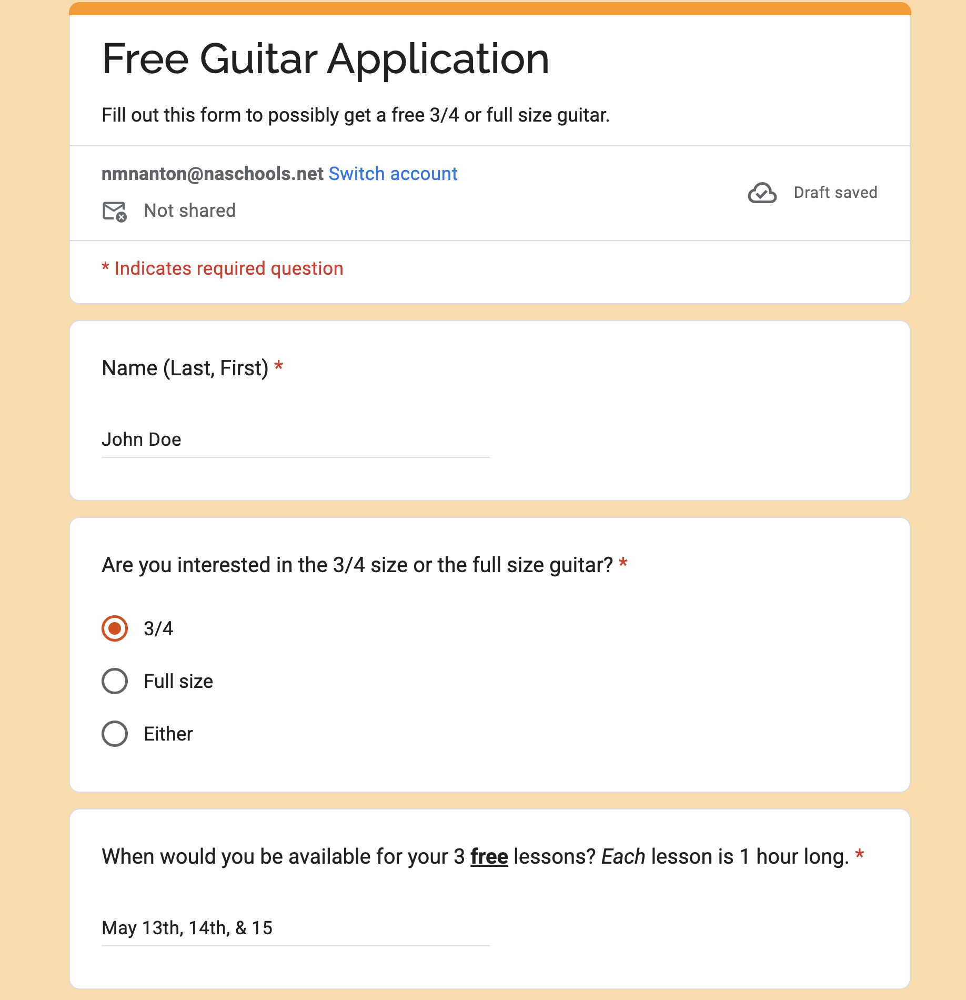

Action Steps
Step 1
Meet with Mr Burdick
- Discuss what goals need to be achieved
- What we will be graded on
- What is required
Step 2
Talk with Sean Hannan
- Discuss local guitar shops and how to get them started
Step 3
Have a meeting with Mr Haviland as a group
- Discuss if we as students are allowed to handle money raised
Step 4
Set up GoFundMe
- Use this as our main fundraising method
Step 5
Call foster homes and ask if they would like to be a part of our action
- Research and gather information on foster homes in the area and if they're willing to get a guitar, lessons, and more.
Step 6
Ask family members and friends to donate
- Ask friends and family to help us on our journey by donating to our GoFundMe.
Step 7
Set up Instagram to bring attention to our GoFundMe
- Main source to bring people to our GoFundMe where we will list what we are doing, why we are doing it, and how people can help.
Step 8
Go to stores play music, and ask for donations
- Go to businesses and stores around town to bring attention to our cause
- We will play music and have signs describing what we are doing
- Will have a bucket for donations
Step 9
Get guitars for the children from the distributor
- Find local guitar/music distributors in the area
- Explain to them what we are doing and what we stand for
- Ask if they are willing to partner with us and possibly offer us a discount on guitars
- Then buy the guitars in bulk
Step 10
Go to foster homes and give them guitars/Give them to the less fortunate kids from Google form
- Call the foster home willing to partner with us and ask them for a date and time that we could give and teach the children guitar.
- Go to the foster homes that had agreed to be a part of our mission and accepted a guitar.
- Give the guitars to the kids who requested one
Step 11
Go to foster homes and teach them how to play music/Show the kids who requested a guitar how to play
- Show them the guitar and give them basic information on it, such as the neck, head, body, and strings
- Teach them basics like tuning, basic riffs, and chords
Proof we are moving along, and we aren't even finished yet!

Slowly growing instagram followers

GoFundMe money slowly increasing!

Guitar application for children to fill out to apply for guitars